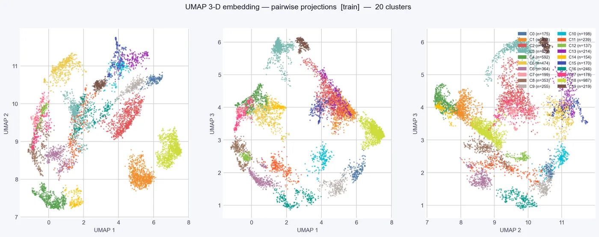

How it works#
- Features. For each 100 ms bin CUBE computes distances between all tracked body points, their velocity and acceleration, and the variation within the bin, at 100 ms and 200 ms scales (plus a 50 ms scale for recordings of 60 frames per second or more). Egocentric (animal-centred) coordinates, left/right-symmetric features and, for side views, floor-referenced posture features are added. Features that describe the order of movements ("temporally-aware" features) are on by default.
- UMAP reduces these features to three dimensions. The neighbourhood size adapts to the recording length.
- HDBSCAN finds dense groups in the embedding. CUBE sweeps the minimum cluster size and picks the candidate whose clusters best survive a check against real behaviour bouts, within a preferred range of 15 to 25 clusters.
- Refinement. Clusters that are too mixed are split, and clusters that are barely distinguishable from a sibling are merged. Rare clusters (below 0.2% of the time) are removed.
- Classifier. A random forest is trained on the labelled bins and then labels every bin of every video, including sessions that were not used for clustering.
- HMM smoothing removes flicker between labels (see Section 7).
- Bout building. Runs of the same label become bouts. Short interruptions of up to 0.3 s are bridged, and bouts outside 0.3 to 10 s are filtered out (the Bout Duration Filter in the main window).
Things you may want to adjust#
Body-region weights (optional). In Advanced CUBE Analysis Parameters, the button Body-Region Weights (optional)... lets you give more or less weight to a body region (Head/Mouth, Forelimbs, Hindlimbs, Trunk/Back, Neck, Tail; other body points go into "Other"). Each region has a slider from 0.1 to 3.0; 1.0 means no change, and leaving every slider at 1.0 applies no weighting. A typical use: if a subtle mouth behaviour such as licking is mixed with other behaviours in one cluster, try a Head/Mouth weight of 2 to 2.5 and rerun Step 3. The last weights you apply are remembered across projects.



Automatic down-weighting of poorly tracked body points (on). A body point that is poorly tracked in many sessions is given a lower weight automatically. Weights you set yourself always take precedence.
Turned-away frames (on). When the animal turns away from the camera, face tracking becomes unreliable. CUBE flags a 100 ms bin as turned away when a majority (threshold 0.5) of the seven face points have low confidence for that session. Flagged windows shorter than 1 s are ignored, and windows less than 0.5 s apart are merged. Flagged bins are excluded from clustering and written under one extra cluster id, Turned Away (one number above your highest real cluster). Labelled videos show a "TURNED AWAY" banner on flagged frames. Untick Exclude turned-away frames from clustering to switch the exclusion off.
When reading statistics, keep in mind that a behaviour interrupted by a turned-away window appears as two shorter bouts, and that percentages of session time include the turned-away time, so groups that turn away at different rates can differ for that reason alone.
Low-confidence clusters. After clustering, cluster_confidence.csv flags clusters that mainly reflect low tracking confidence, so you can check them before spending time on annotation. The option Auto-flag impure clusters is off by default because it can wrongly flag real behaviours; always check example clips before trusting a flag.
Cluster count. Leave Target cluster count at 0 for automatic selection within the preferred range, or set a number to steer Step 3 towards it. See Section 8.
Stability checks. By default CUBE repeats the embedding and clustering with 6 random seeds and reports how similar the results are (cluster_stability.png). If the agreement is low (mean ARI below 0.55), CUBE automatically builds a more robust partition: by default it uses the most representative seed (medoid) and escalates to consensus clustering only if that seed is not trustworthy. These steps add runtime. You can switch them off or change them in the Advanced window.
Plots written by Step 3#
| File | What it shows |
|---|---|
umap_embedding.png, umap_3d.html |
The embedding coloured by cluster (the HTML file is interactive) |
cluster_validity.png |
Per-cluster silhouette and the HDBSCAN condensed tree. Use it to spot weak clusters before annotation |
split_merge_refinement.png |
Before and after view of the refinement (only written when it changed the labels) |
cluster_hierarchy_postures.png |
A dendrogram of the clusters with a typical posture under each one |
cluster_trajectories_aligned.png, cluster_trajectories_unaligned.png |
The average movement of each cluster, with and without a common heading |
cluster_stability.png |
Agreement between random seeds |
transition_matrix.png, hmm_transition_matrix.png, hmm_syntax_network.png |
How behaviours follow each other |
state_space_projection.png |
How the behavioural states sit in a shared low-dimensional space |